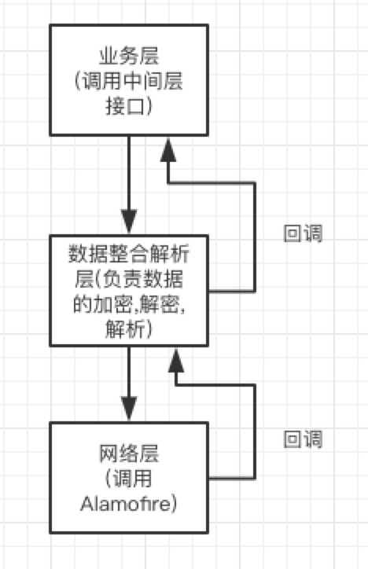
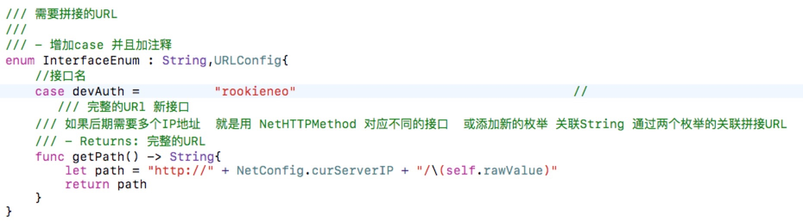
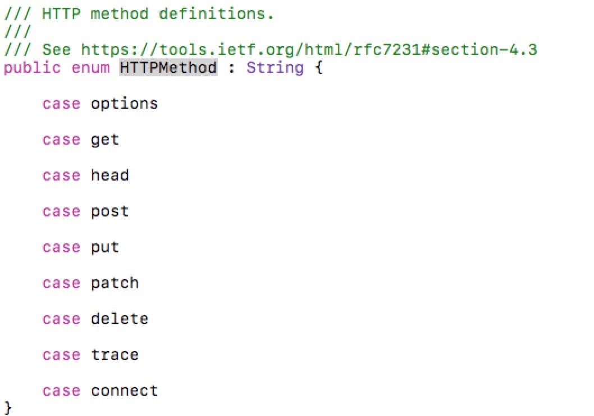
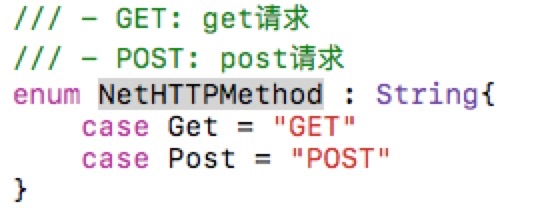
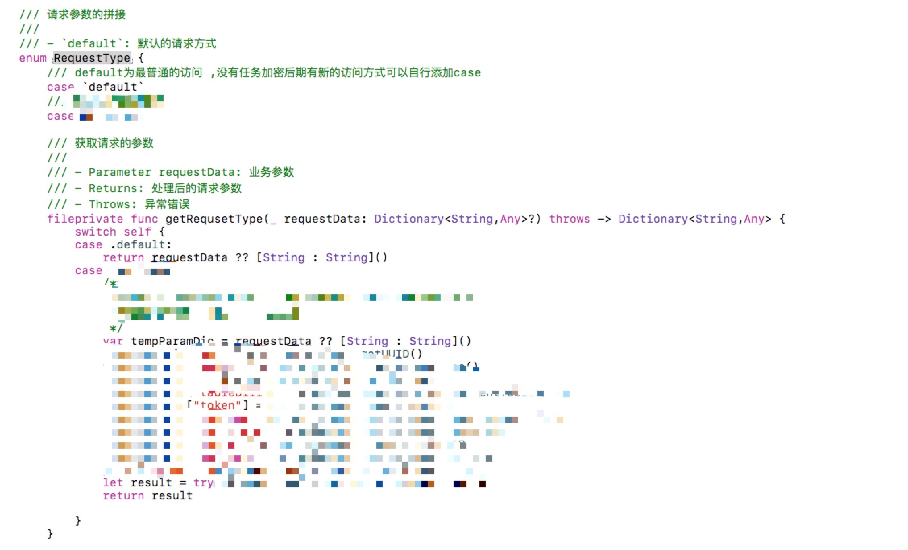
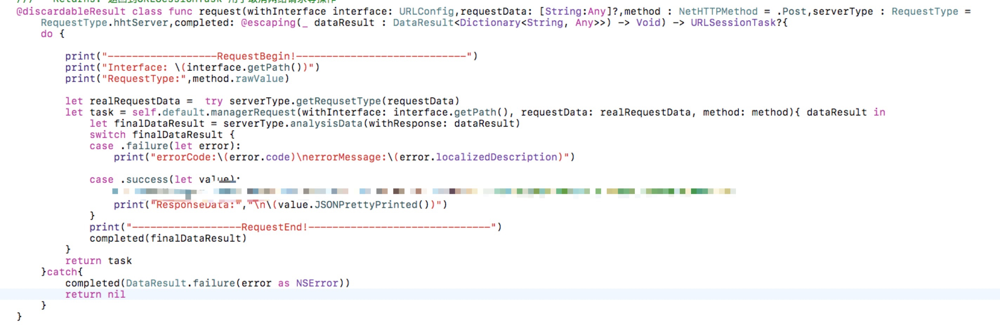
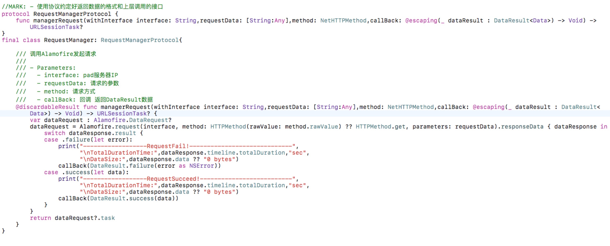

基于Alamofire网络库的二次封装
Alamofire作为一个Swift的网络框架被开发者们大量使用在自己的项目中,但处于公司的业务,统一处理,后期换库 但实际可能永远不会 等多方面的考虑,一般都会对其进行二次封装.由于公司项目的网络框架是我写的,并进过了多次重构,优化,我觉得可以满足大部分的日常需要,所以我准备拿出来和大家讨论一下.
1
首先我准备把框架分为业务层,数据层(整合数据,加密,统一处理的位置)和最后的网络层.其实之前也有想直接分两层,但是为了换库的时候没有痛感,最后还是考虑分为三层了,将网络层由中间层调用,所以换库之后,业务层不会有改动,而且数据整合解析层 也不会有改动.而且还有一点考虑,之后我会提到.

下面我就说一下我设计时候的思路.
2定义接口
也就是业务层需要发起网络请求时候的接口.我定义的接口是这样的

@discardableResult class func request(withInterface interface: URLConfig,requestData: [String:Any]?,method : NetHTTPMethod = .Post,serverType : RequestType = RequestType.hhtServer,completed: @escaping(_ dataResult : DataResult<Dictionary<String, Any>>) -> Void) -> URLSessionTask?
至于为什么定义成这样子,我一个参数一个参数的解释,其实解释完了,这篇博客也就差不多了.
首先第一个参数interface: URLConfig
URLConfig是一个协议.内容很简单
protocol URLConfig{
func getPath() -> String
}
就只有一个getPath的方法,目的是获取接口的url路径,有人会说,那为什么要定义一个协议呢?直接一个String类型不就可以了吗?这样做有一个好处,大家有没有发现,让你直接调用Alamofire的时候,可以传String,也可以传URL,都可以,因为它的类型也是一个协议呀,String和URL都实现了这个协议就ok拉,所以我也是这样做的.其实就是面向对象中的多态.
接口的管理
在项目中我是用枚举关联String管理接口的,这样的好处是接口统一在一个位置,清晰,易扩展,好维护.

枚举同样也实现了URLConfig协议,在调用网络接口的时候,第一个参数只需要填入InterfaceEnum.devAuth就可以了,可能有朋友会有疑问,基本每个公司开发接口,测试接口,正式接口,有的时候你们公司对接别的服务器,还有有不同的协议,比如你们用https他们用http的情况,切换环境,我用一个全局变量就ok了,就是NetConfig.curServerIP,只要把curServerIP换了,环境也就切换了,但是一部分用http,另一部分用https,或有的时候你和同事联调,100个接口有10个跑他的ip,90个跑服务器的,怎么办呢?其实很简单,这就体现了协议的好处,你在建一个InterfaceXXXXEnum,再实现一个getPath协议,这次你可以拼接成https:// 也可以拼接成ftp的都可以了,这样做之后,你会发现,你的接口管理的很清晰,那个接口是http的 哪个是https的,哪个是XXX的,一看就知道了,统一了管理.
第二个参数是接口中需要的参数,这个没啥好说的
第三个是请求的方式
是GET还是POST,按理说这个也没啥好说的,但是有一点我希望在这里说明,也就是我上文我说的之后我会说的,由于我们用的是AlamoFire,他有自己的请求类型枚举

但是我不想用它,因为我们进行二次封装的目的是什么,是隔离,不想让他对项目有太多的入侵,所以这也是我建这个中间层的第二个目的,在中间层,把所有数据转换成Foundation框架的基本类型,传递给Alamofire,这样,后期无论怎么换,只要有Foundation在,我的框架就不由会大问题.所以我自己也建了一个枚举跟上面的枚举差不多,只不过区别是他是他的,我是我的~~.

第四个参数,serverType
在实际开发中,有很多时候你对接的不是一个服务器,比如美团,微信,阿里他的项目中嵌入了好多别人的项目,虽然这些项目的网络请求会在自己的sdk中解决,但是难免会出现一个项目跑两个服务器的情况,就像我们公司海底捞重构的项目,前端和后端一起重构,但是前端之前有过UI重构的经验了,所以写起来要比后端快的多,所以我们在重构的时候大部分还是用的老接口,这时候,有个后端的大哥说,那个我这几个接口做好了,你试试吧,但是他的这几个接口是有前置条件了,但这些前置条件在新的服务器中还没有实现,这时候你就需要前置接口调用老服务器,新接口调用新服务器,不同的服务器,加密解密方式,数据的拼接要求肯定是不同的,所以我就又造了一个枚举,ServerType

有个这个枚举之后,就可以根据不用的服务器,做不同的加密,数据返回后做不同的解析了.
然后就是最后一个参数了,回调函数.
这个回调函数其实也没什么说的,但是我对数据做了一层封装,就是DataResult的数据类型,至于为什么,我的Swift的一种常用类型那篇博文里有说明,大家可以去看看.
最后作为一个网络请求,你的返回值是什么
它是什么,取决你要拿它干嘛用,很多时候,在轮询的场景下,一个请求没完成,不能发起下一个请求,或是把上一个请求取消,所以我就把URLSessionTask返回了,其实Alamofire也有自己的Task,但是我还是坚持返回了Foundation框架里的类型,至于为啥就不多说了.
3核心的实现
网络核心层当然后调用Alamofire了,这部分就比较简单了.在这之前,先看下上面讲的接口的实现.

default就是核心层的单例
private static let `default` : RequestManagerProtocol = RequestManager()

这一层中,还是一个协议,保证了接口的统一,如果有换库等行为,只要实现了这个协议,就可以保证对外暴露的接口不变.
业务层的调用
尽管我们接口中有很多参数,但是大部分都有默认参数,所以大部分情况下,业务端是不需要知道全部参数的,他只需要知道两个参数,一个是接口地址,一个是要传的参数
NetRequest.request(withInterface: InterfaceEnum.cashNeedMoney, requestData: params) { (data) in
switch data {
case .failure(let error):
complete(DataResult.failure(error))
case .success(let value):
let money = (value["DATA"] as? NSNumber) ?? 0
complete(DataResult.success(money))
}
}
仅此而已,这就够了.
思考
到目前为止,我的这个封装完全满足了项目的需求,但是也有在考虑要不要增加返回数据的类型,现在我只支持返回字典,但是这样做我也是有自己的想法的,因为一个项目业务端的解析方式大都很固定,我给他们暴露了太多的接口,反而会导致业务端调用的混乱,毕竟我是二次封装,如果写的太多了,就不是二次封装了.下一篇博客,我会分析Alamofire的源码,并提出我的疑惑,欢迎来撕~